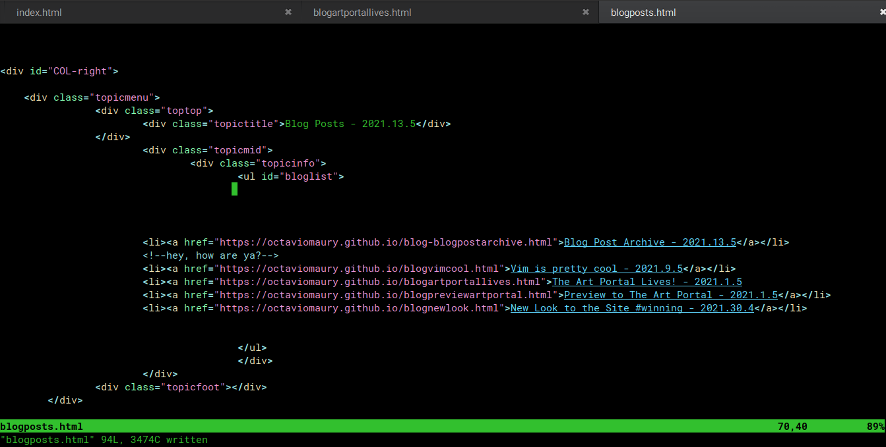

Very early on in the redesigning of my site, I realized that after a while, the Blog Posts would probably
take up a lot of space on the homepage, and that would probably be a pain in the ass for anyone
with slow internet.
So, making an archive for blog posts has been on my mind for a while now. Turns out it was extraordinarily
easy to do.

Pretty much everything about making a website is deceptively easy to do.
So, from now on only 3 blog posts will be shown on the homepage, and if you wanna read older posts,
just go through The Archives
Another cool thing this new archive allows for is easier sharing, as each post now has it's own url.